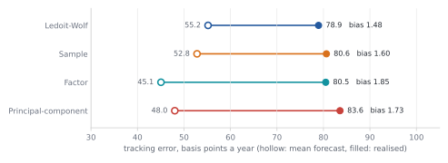
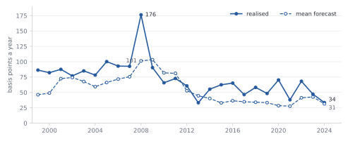
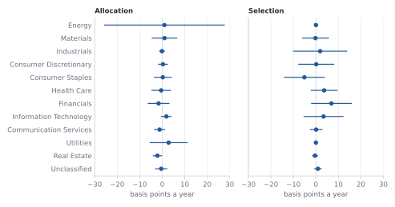

Stock-level index tracking: a point-in-time benchmark, a long-only mandate and its attribution by sector
Summary
- {{kp1}}
- {{kp2}}
- {{kp3}}
- {{kp4}}
Terms used in this note, each with the one meaning it carries throughout.
- universe
- the point-in-time S&P 500, the stocks on CRSP's list of index members on the last trading day of the month before.
- market capitalisation
- price times shares outstanding, at the end of the month before.
- cap-weighted
- weighted by market capitalisation. CRSP's value-weighted return of the list is cap-weighted too, on CRSP's own definition of a month's members, set out in section 2.2.
- value-weighted
- cap-weighted.
- benchmark
- the cap-weighted universe, each stock's weight its market capitalisation over the universe's total.
- active weight
- a weight in the portfolio minus the same weight in the benchmark.
- active return
- the portfolio's return minus the benchmark's, each over the month's names with a return.
- basis point
- a hundredth of a percentage point.
- tracking error
- the standard deviation of the monthly active return, times the square root of 12. The forecast is the tracking error the month's covariance matrix implies for the month's active weights, and the realised is the one measured afterwards.
- excess return
- a return minus the one-month Treasury bill rate.
- covariance matrix
- the table of the stocks' variances and of their covariances with each other.
- eigenvalue
- the variance of one of the uncorrelated portfolios a covariance matrix splits into. The condition number is the largest eigenvalue over the smallest.
- singular
- said of a matrix whose smallest eigenvalue is zero.
- covariance estimator
- a way of estimating the covariance matrix from three years of daily returns: the sample covariance, the Ledoit-Wolf estimator, which shrinks the sample covariance towards a scaled identity matrix, a factor model on French's five factors and momentum, and a principal-component model with the benchmark as its first factor. The last three are the structured estimators.
- band
- the range of the bias statistic within which a forecast counts as right, 0.8 to 1.25, fixed before the run.
- shrinkage intensity
- the weight, from zero to one, that the Ledoit-Wolf estimator puts on the scaled identity matrix, set by the data.
- estimation error
- the difference between an estimate and the quantity it estimates, here between a covariance matrix estimated from three years of returns and the one that holds in the month.
- bias statistic
- the standard deviation of each month's active return divided by that month's forecast, over the months with a forecast above one millionth: the standard deviation of the active return in units of each month's forecast. It is one when the forecasts are right on average, and it is not the realised tracking error divided by the mean forecast.
- mandate
- the full set of constraints the portfolio obeys, constraint set C3 below.
- tilt
- every Energy and Utilities stock capped at half its benchmark weight.
- beta
- the slope of a return on the benchmark's return.
- path
- one covariance estimator under one constraint set at one turnover cap, run month by month from the benchmark.
- turnover
- a month's one-way trading as a share of the portfolio. Forced turnover is what index changes require, and chosen turnover the rest. Reweighting is the turnover that following the benchmark's own changes in share counts and its dividends takes, rebalancing the optimiser's own moves, and the overlap the trades of one step that the next undoes.
- turnover cap
- the limit on chosen turnover, 2 per cent of the portfolio a month in the mandate.
- paired test
- a test of the difference between two figures measured on the same months, here the variance test of Ledoit and Wolf (2011) of two realised tracking errors. Its 95 per cent interval comes from a circular block bootstrap, which takes new samples of the months in blocks of 12 consecutive months, and its p-value is the probability from the same bootstrap of a difference at least as far from zero if the two variances were equal. The detectable difference is the difference at which the interval would exclude zero four times in five.
- Holm's correction
- an adjustment of the p-values of a family of comparisons for their number (Holm, 1979): the smallest is multiplied by the family's size, the next by one less, and each is at least the one before it.
- Newey-West standard error
- the standard error of a mean that allows each month to be correlated with the next twelve. A plain standard error makes no such allowance.
- autocorrelation
- the correlation of a series with its own past values.
- attribution
- a split of the active return into parts that sum to it.
- allocation
- the part from holding a sector at another weight than the benchmark's, the sector's active weight times the benchmark sector's return less the benchmark's.
- selection
- the part from holding other stocks within a sector, the sector's benchmark weight times the portfolio sector's return less the benchmark sector's.
- interaction
- the sector's active weight times that same difference.
- Unclassified
- the twelfth sector, the members with no GICS sector, one to three securities a month.
- factor
- a common source of return: the market, size, value, profitability and investment factors of Fama and French (2015), and momentum.
- loading
- a stock's sensitivity to a factor, from a regression of its daily returns on the six factors over the three years before the month.
- active exposure
- the members' loadings on a factor weighted by the active weights. A factor's contribution is its active exposure times its return, the residual is the active return less the contributions, and the factor share is one minus the residual's variance over the active return's.
- look-ahead
- the use, in a decision dated at one time, of data published only later, named in the Other projects below.
- Sharpe ratio
- a portfolio's mean excess return over its standard deviation, named in the Other projects below.
- gate
- a test of the data fixed in advance, which stops the study if it is not met.
- expectation
- a test of a result fixed in advance, reported as a finding whether it is met or not. An expectation named for two or more estimators has one verdict, met only if it holds for each, a rule set on 12 November 2026 after the run of the mandate: before it, E5 read met for the factor estimator and not met for the Ledoit-Wolf estimator.
1. Introduction
An index-tracking mandate is judged by how far its portfolio strays from a cap-weighted benchmark, and the manager who runs it states that distance in advance as a forecast tracking error, computed from a covariance matrix of the benchmark's stocks. Yet the benchmark changes its members every month, and the forecast rests on an estimate. When the number of assets is not negligible against the number of observations, the sample covariance matrix is ill-conditioned and inverting it amplifies its estimation error (Ledoit and Wolf, 2004), and about 500 stocks on about 755 days of returns is a ratio of about 0.65. Estimation error in the moments an optimised portfolio rests on, expected returns above all, is what such a portfolio pays for out of sample (DeMiguel et al., 2009). The client's constraints, bounds on single names and sectors, a cap on turnover, exclusions and tilts, then decide how much the optimiser can do with the forecast. The question this note asks is therefore a practical one: under such a mandate, how close does the portfolio stay to the benchmark, how well does each of four common covariance estimators forecast the distance it realises, what is the turnover made of, and where does the active return come from by sector.
The closest evidence comes from a companion study that ran a mandate of the same design on Kenneth R. French's 49 industry portfolios and found that five covariance estimators understate their own tracking error, by 22 to 61 per cent (Hofer, 2026). But an industry portfolio does not behave like a stock in the ways a mandate depends on. Industries do not enter or leave the benchmark, are never delisted, carry no single-name concentration and sit in no GICS sector. And in that study's table by decade the bias statistics of its estimators from daily returns lie between 0.98 and 1.15 in every decade from 2000, inside the band of 0.8 to 1.25 this study uses, so the understatement of those estimators over the whole window comes from the years before 2000. The industry evidence therefore leaves open whether a forecast of this kind understates the tracking error of a mandate run on stocks in the years since 2000, and where that mandate's active return comes from by sector. At the stock level the benchmark itself has to be built: a list of members as it stood at each date, their capitalisations at the start of each month, their returns with the returns of delisted stocks applied (Shumway, 1997), and their sectors as they were classified at the time.
This study builds that benchmark and runs the mandate on it. I take the members of the S&P 500 from CRSP's list, month by month from {{recon_first_w}} to {{recon_last_w}}, weight each by its market capitalisation at the start of the month, and check the result three ways: against CRSP's own value-weighted return of the same list, against CRSP's count of members and their total value, and against French's large-cap portfolios sorted on momentum and on variance. From {{first_w}}, when Compustat's GICS history begins, a long-only mandate minimises the forecast tracking error each month under four covariance estimators, with bounds per stock, company and sector, a cap on chosen turnover, the tilt, two excluded GICS sub-industries and a beta of one. Twenty-four paths run over the {{months}} months to {{last_w}}. The turnover of each is split into the part that index changes force, the part that follows the benchmark's own reweighting and the part the optimiser chooses, and the active return of the four paths at a 2 per cent cap is attributed by sector with the method of Brinson and Fachler (1985) and by the five factors of Fama and French (2015) and momentum. Four gates on the data and nine expectations on the results were written into the code's constants, each dated before the run that judges it. The design measures the mandate's tracking error, its forecast and its parts, and only that: it does not estimate a return the mandate earns, since a portfolio built to minimise its tracking error is not built to earn one.
The S&P 500 between 1999 and 2024 is an informative setting for this question for three reasons. First, CRSP's list dates each membership by day, so the benchmark can be rebuilt with nothing unknown when each month begins, and CRSP's own file of the index supplies an answer key against which the rebuilt return can be checked. Second, the window holds the fall of 2000 to 2002, the financial crisis of 2008 and the shock of 2020, months in which volatilities and correlations moved far from their values over the three years before, which is where a forecast drawn from those three years is most likely to miss. Third, from 2014 the list holds companies with two share classes whose daily returns move almost together, a feature that tests a covariance estimator in a way that industry portfolios cannot.
Empirically, the rebuilt benchmark reproduces CRSP's value-weighted return of the same list with a tracking error of {{recon_te}} basis points a year over 99 years, and the mandate's realised tracking error, {{te_lo}} to {{te_hi}} basis points a year on the four estimators, lies above every estimator's forecast. The bias statistics of {{bias_lo}} to {{bias_hi}} lie above the band of 0.8 to 1.25 fixed before the run, and the realised tracking error is highest in {{peak_year}}, when the Ledoit-Wolf path realised {{peak_re}} basis points against a mean forecast of {{peak_fc}}. Index changes force {{forced}} of the {{total_turn}} per cent a year that the Ledoit-Wolf path turns over. By sector, allocation is the largest of the three terms month by month on each structured estimator, as expected, while over the window the three terms are small beside their standard errors: on the Ledoit-Wolf path allocation and selection average {{lw_alloc}} and {{lw_sel}} basis points a year, on Newey-West standard errors of {{lw_alloc_se}} and {{lw_sel_se}}. The estimates therefore indicate where the mandate's tracking error comes from without identifying a return it earns.
The note is structured as follows. Section 2 sets out the data layer, the covariance estimators, the mandate, the measures and the two attributions, with the expectations fixed for each. Section 3 reports the verdicts and the results in the order the design runs. Section 4 sets the results against the industry evidence and states the limits of the design.
2. Data and design
2.1 The universe and the benchmark
The universe in month t is the set of stocks on CRSP's list of index members on the last trading day of month t minus 1, so that nothing unknown when the month begins decides membership. Each member's monthly return comes from CRSP's monthly stock file. A delisting in the month is applied by the study's rule, after Shumway (1997): CRSP's delisting return where it gives one, which compares the value after the delisting with the price on the last day of trading (CRSP, 2025, p. 30), and where it does not, minus 30 per cent for a delisting code from 400 to 599 and zero for any other code. CRSP names the codes beginning with 4 a liquidation and those beginning with 5 a delisting by the exchange (p. 28), and the study treats both as a delisting for poor performance. A member's market capitalisation at the start of month t is its price times its shares outstanding at the end of month t minus 1, with the absolute value of the average of bid and ask standing in for a missing closing price (pp. 70 and 100), and the benchmark weights each member by it. A member's sector is the GICS sector in force on the last trading day of month t minus 1, found through CRSP's link to Compustat, and a member with no sector on that day is counted in a twelfth sector, Unclassified. The data are CRSP and Compustat via Wharton Research Data Services, accessed through Queen Mary University of London, from an extraction of 28 September 2026. The descriptions of the fields of CRSP's stock and index files in this note follow CRSP's guide to its stock and index databases, cited by printed page. CRSP's list of index members and its link to Compustat are not in the guide, and are described from the study's design and from counts of the extraction. The guide names none of the tables of Wharton Research Data Services, and CRSP's monthly file of the S&P 500 is read as its value-weighted index of the S&P 500 universe, index 1000500, with the published S&P 500 Composite, index 1000502, beside it (p. 112). CRSP ends on 31 December 2024 on this subscription, and so does the sample.
The index as S&P publishes it is not the benchmark, for two reasons that the data impose. Its total return is not in the extraction, and since 2005 the index weights each stock by the shares available to the public, its float. CRSP gives one share count per security and no float factor (CRSP, 2025, pp. 79 and 80), so the index's float-adjusted weights cannot be rebuilt from it. The benchmark is therefore the full-capitalisation universe of CRSP's list, and every tracking error in this note is measured against it.
2.2 The checks on the data
Three checks say whether the rebuilt benchmark is what it claims to be. First, its return, with dividends and price-only, is set beside CRSP's own value-weighted return of the same list, which CRSP computes from monthly returns over the members at the end of the month that have a price at the end of the month and of the month before, so that no delisting return enters, with ADRs left out (CRSP, 2025, pp. 104 and 106). The benchmark takes the members at the start of the month, every share code and the delisting returns, so the comparison sets two definitions side by side, and section 3.2 rebuilds the return on CRSP's as well. Second, its count of members and their total value are set beside CRSP's count, the securities with a valid price on the day (p. 43), and CRSP's total value, which leaves ADRs out (p. 52). Third, the universe is sorted each month into quintiles on momentum, the return compounded from month t minus 12 to month t minus 2, and on variance, the variance of daily returns over the 60 trading days before the month, both as French defines them, and the cap-weighted spread of the highest quintile less the lowest is set beside French's spread within his largest size quintile. French's quintile is cut at NYSE breakpoints and holds between about 100 and 530 names a month, so the two sets overlap without coinciding and a correlation near one is not expected.
Four gates and three expectations judge the data layer. The gates are that the benchmark's tracking error against CRSP's value-weighted return of the same list is at most 50 basis points a year (G1), that the usable window is at least 15 years (G2), that at least 90 per cent of the stocks removed from the universe from 1990 have a CRSP price within 10 trading days of their removal (G3), and that the market capitalisation is present in at least 90 per cent of membership months for at least 90 per cent of names (G4). A gate that is not met stops the study. The expectations are a tracking error of at most 20 basis points a year with a mean monthly difference within 2 basis points of zero, with dividends and price-only (E1), a count within 10 names of CRSP's in every month and a total value within 2 per cent in at least 95 per cent of months (E2), and, for each sort, a correlation of at least 0.80 with French's spread and a mean monthly difference within two standard errors of zero (E3).
2.3 The covariance estimators
For each month of the evaluation window, the covariance matrix of the members' daily excess returns over the three years before the month is estimated in four ways: the sample covariance, the Ledoit-Wolf estimator (Ledoit and Wolf, 2004), a factor model on French's five factors and momentum, and a principal-component model with the benchmark as its first factor and four further components. The four estimators are copied unchanged from the companion study's code, and a test checks each copied file's SHA-256. A member that lacks a return on more than five days of the window takes a row from a model fitted on its own days, so that each matrix is positive semi-definite by construction. With about 490 members on about 755 days the sample matrix exists and is poorly conditioned, and the first clause of E4 expects that in every month its condition number is at least 10 times that of the Ledoit-Wolf matrix.
2.4 The mandate
The mandate holds the universe close to the benchmark under constraints a long-only client would set, and its constraints come in four cumulative sets. C0 is long-only. C1 adds a bound per stock, each within 50 basis points of its benchmark weight, the same bound on the sum of a company's share classes, and a band per GICS sector, each within 2 percentage points of its benchmark weight. C2 adds a cap of 2 per cent a month on chosen turnover. C3, the mandate, adds the tilt, a weight of zero in two GICS sub-industries, Tobacco and Aerospace and Defense, and a beta of one to the benchmark. In a set with the tilt the sector band applies to the other sectors only, because half of Energy's benchmark weight is above 2 percentage points in 268 of the 306 months, and a sub-industry is wider than a list of controversial weapons. In the same way the bounds per stock and per company cover the stocks outside the tilted sectors and the excluded sub-industries: a tilted stock is held between zero and half its benchmark weight, and an excluded one at zero, so no largest active weight is reported for the mandate's paths, where it is one stock's weight. Each month the optimiser chooses the weights that make the forecast tracking error as small as the constraints allow, starting from a reference portfolio: last month's portfolio after last month's returns, with the stocks that left the universe sold and the entrants bought at their benchmark weight. Forced turnover runs to the reference portfolio and chosen turnover from it, so the cap limits only what the optimiser chooses.
Twenty-four paths run month by month over the evaluation window, each starting as the benchmark: the four estimators under the four sets at the 2 per cent cap, and the Ledoit-Wolf and factor estimators under the mandate at caps of 0.5, 1 and 4 per cent and with no cap, which trace the frontier of tracking error against turnover. Costs are 10 basis points per unit of total one-way turnover, forced turnover included, with 20 as the sensitivity, and returns are gross of fees. The expectations on the mandate are that the sample estimator's realised tracking error is above the Ledoit-Wolf estimator's (E4, second clause), that for the Ledoit-Wolf and factor estimators the mean forecast does not rise as the cap loosens and the realised tracking error at the 4 per cent cap is below that at 0.5 (E5), that each structured estimator realises 50 to 150 basis points a year with a bias statistic between 0.8 and 1.25 (E6), and that forced turnover is less than a third of the Ledoit-Wolf path's total (E7).
2.5 The two attributions
The active return of the four paths at the 2 per cent cap is split each month in two ways. By sector, with the method of Brinson and Fachler (1985), allocation, selection and interaction are computed for each of the twelve sectors, and summed over the sectors the three equal the month's active return. Both sides are taken over the month's names with a return, each rescaled to one, as the committed active return is. A sector that the portfolio does not hold, none of its stocks with a return above a weight of one millionth, has a selection of zero and keeps the rest of its part as interaction, so that the identity holds exactly. The monthly terms are summed over months arithmetically, with no geometric linking, and reported as annual averages with Newey-West standard errors at 12 lags (Newey and West, 1987). By factor, the attribution of the companion study, copied unchanged, multiplies each month's active exposures to the six factors, from the factor estimator's loadings of the month, by French's monthly factor returns, and leaves a residual that closes the sum.
Two expectations judge the attributions. E8 expects the three terms to sum to the active return within 1e-9 in every month of the four paths, and, on each of the Ledoit-Wolf, factor and principal-component paths, the mean absolute monthly allocation to exceed the mean absolute monthly selection, with the interaction's the smallest of the three, each month's figure being the sum over the twelve sectors. The reason fixed before the run is that the mandate's active return comes from the tilt, an underweight of two sectors, while the stocks within sectors are chosen to keep the tracking error small. E9 expects contributions and residual to sum to the active return within 1e-9 in every month, and the mean active exposure to the market factor to lie within 0.05 of zero on each of the four paths, because the mandate holds its beta at one.
3. Results
3.1 The verdicts
Table 1 reports the four gates and the nine expectations with the figure each verdict rests on. The four gates are met, so the study runs on the full design. Of the expectations, E1, E2, E3, E7, E8 and E9 are met, E5 and E6 are not, and E4 is met in its second clause and not in its first. Each is reported below in the order the design runs, in the same words whether it is met or not.
Table 1. The four gates and nine expectations, fixed before each run, and what the run found
{{table1}}E5 and E6 each have one verdict over the estimators they name, a rule set on 12 November 2026 after the run of the mandate. Before it, E5 read met for the factor estimator and not met for the Ledoit-Wolf estimator. Source: CRSP and Compustat via Wharton Research Data Services, Kenneth R. French Data Library and author's calculations. {{results}}/verdicts_milestone1.json to verdicts_milestone4.json.
3.2 The data layer
The rebuilt benchmark reproduces CRSP's own figures closely. The universe holds 1,936 securities over 2,064 membership spells, {{member_months}} member-months from {{recon_first_w}} to {{recon_last_w}}, and its count is within 10 names of CRSP's own count on the same day in all 1,188 months, so the usable window is the whole 99 years (G2, E2). Its tracking error against CRSP's value-weighted return of the same list is {{recon_te}} basis points a year with dividends and {{recon_te_px}} price-only, with mean monthly differences of minus 0.18 and minus 0.16 basis points (G1, E1), and over the evaluation window the tracking error with dividends is {{recon_eval_te}}. Rebuilt on CRSP's own definition of its index, the members at the end of the month with a price at both of its ends, ADRs left out and no delisting return (CRSP, 2025, pp. 104 and 106), the return has a tracking error of 8.2 basis points a year against CRSP's with dividends and 8.2 price-only, and the benchmark one of 13.3 and 13.4 against it. So the difference of definition accounts for part of the benchmark's {{recon_te}}, and the rest has no cause the study can name. The three figures are tracking errors and do not subtract: the benchmark stands further from the rebuilt return than from CRSP's, so its difference from the rebuilt return and the rebuilt return's difference from CRSP's offset in part. CRSP's count of the stocks its return uses equals the rebuilt return's in 606 of the 1,188 months, and in 1,129 when the month's ADR is counted, one ADR in each of 544 months. This suggests that CRSP's count includes the ADR, and whether its return does is not tested. This comparison was added on 19 November 2026, after the study's results were known, and has no verdict. Its total value is within 2 per cent of CRSP's in 1,186 of the 1,188 months. All 836 removals from 2 January 1990 have a CRSP price within 10 trading days (G3), and 1,902 of 1,912 names have a market capitalisation in at least 90 per cent of their membership months (G4). Of the 799 delisting months of members, CRSP gives the delisting return in 798, and the study's minus 30 per cent, after Shumway (1997), is used once. Of the 798, 6 are partial-month returns, which compare the last trading price with the last month-end price where CRSP has no information after the delisting, and which CRSP's guide calls not truly delisting returns (CRSP, 2025, pp. 30 and 98). Four of them fall in the 36 months with a code from 400 to 599. The study's rule applies CRSP's value as it stands, so no return changes.
Two comparisons with no verdict bear on how the list was assembled. Until 2005 the index weighted each stock by its full capitalisation, as the benchmark does, so a member missing from CRSP's list or a removal dated wrongly would widen the gap between the benchmark's price-only return and the index's own price return. Pooled over the years of each period, that gap is {{gap1}} basis points a year over 1926 to 1956, {{gap2}} over 1957 to 1989, {{gap3}} over 1990 to 1998 and {{gap4}} over 1999 to 2004, and {{gap5}} over 2005 to 2024, when the index weights by float. From 1957 the gap lies between {{gap3}} and {{gap2}} in every period, and the move to float in 2005 leaves it in that range, {{gap5}} after it against {{gap4}} over the six years before. So from 1957 no period stands out, and the gap is no smaller in the years when the index weighted by full capitalisation than after 2005, when it weights by float. The comparison is therefore not fine enough to show the change of weighting, and it would show an error of membership only if the error moved the return by more than these 20 to 36 basis points a year. Before 1957, when the index holds 90 names (CRSP, 2025, p. 104), the gap is {{gap1}}, with {{gap_1926}} in 1926 and {{gap_1927}} in 1927, so in those years the comparison does not confirm the list and cannot say whether the list or the index's own computation is the cause. CRSP's guide says that CRSP has no data for two securities of the index between 1925 and 1931 (p. 106), so in those years the benchmark lacks two of the 90 members, and the study does not measure what that adds to the gap. The gap of {{idx_to_2004}} over all the months to December 2004 comes from the years before 1957: pooled over 1957 to 2004 it is {{gap_57_04}}. From July 1999 at least 99.4 per cent of the universe's members and at least 99.0 per cent of its capitalisation have a GICS sector in every month, which is why the evaluation window runs the 306 months from July 1999.
Against French's portfolios, the universe's spreads track his large-cap spreads without coinciding with them (E3). Over the 1,172 months from January 1927 to December 2024 with a value in both, the momentum spread has a correlation of {{mom_corr}} with French's, and their mean monthly difference is minus 10.4 basis points on a standard error of 9.0, or 1.15 standard errors. Over the 417 months from April 1990 the variance spread has a correlation of {{var_corr}} and a mean difference of plus 2.7 basis points on 9.4, or 0.29 standard errors. With no verdict, the momentum correlation is 0.846 over the 359 months to March 1957, when the universe held about 90 names, and 0.927 over the 813 months from April 1957, consistent with the two sets overlapping more once the universe holds about 500 names.
3.3 The covariance estimators
The first clause of E4 is not met. The sample matrix's condition number is at least 10 times the Ledoit-Wolf matrix's in {{e4_months}} of the 306 months, all of them from 2017, and the ratio is 5.4 at the median and 2.8 at the least. With about 490 members on about 755 days the sample matrix is not singular, and the Ledoit-Wolf shrinkage intensity lies between 1.1 and 7.1 per cent, so the shrunk matrix stays close to the sample one. The months that reach the level have a cause found after the run. From 2014 the universe holds up to five companies with two share classes each, and where both classes are complete members their daily returns have a correlation of 0.98 at the median, so the difference between the two is a portfolio with almost no variance and sets the smallest eigenvalue of the sample matrix. With one share class for each company the level is reached in {{e4_one_class}} of the 306 months, all from 2020 to 2022, and the median ratio is 5.0. This check carries no verdict, and the basis of E4 stays as it was written before the run.
3.4 Tracking error under the mandate
Figure 1 and Table 2 report the tracking error the mandate forecast and realised. Under the first three constraint sets nothing pushes the portfolio off the benchmark, and it stays there in every month: the largest absolute active weight of the twelve paths is 2.4e-6. Under the mandate at the 2 per cent cap the realised tracking error is 78.9 basis points a year on the Ledoit-Wolf estimator, 80.6 on the sample estimator, 80.5 on the factor estimator and 83.6 on the principal-component estimator, against mean forecasts of 55.2, 52.8, 45.1 and 48.0. The sample estimator's realised figure lies above the Ledoit-Wolf estimator's, as the second clause of E4 expects. The two paths share their months and their active returns have a correlation of {{e4_corr}}, so the difference is tested on the paired months with the variance test of Ledoit and Wolf (2011): {{e4_d}} basis points a year, with a 95 per cent interval of {{e4_lo}} to {{e4_hi}} (p {{e4_p}}, and {{e4_holm}} with Holm's correction across the three estimators set against Ledoit-Wolf, Table 3). The difference is small and distinguishable from zero. Corrected on 18 November 2026: this sentence had compared it with the sampling error of one figure over 306 months, about 3 basis points, and had said the clause was met without separating the two estimators, a yardstick that leaves out that the two figures are measured on the same months.

Basis points a year. Hollow: the mean of the monthly forecasts. Filled: the realised tracking error. The bias statistic is the standard deviation of the active return in units of each month's forecast, and not the ratio of the two points, which is {{ratio_lo}} to {{ratio_hi}}. Simulated, monthly rebalancing, before fees. Source: {{results}}/paths_summary.json, drawn by notebook 12.
E6 is not met for any of the three structured estimators. Their realised tracking error lies inside the range of 50 to 150 basis points a year, at 78.9, 80.5 and 83.6, but the bias statistic, 1.48 on the Ledoit-Wolf estimator, 1.85 on the factor estimator and 1.73 on the principal-component estimator, lies above the band's upper end of 1.25 for all three, and the sample estimator's, with no verdict, is 1.60. A circular block bootstrap of the months, in blocks of 12 and with 2,000 samples, added on 19 November 2026, after the study's results were known, gives each bias statistic a 95 per cent interval: 1.29 to 1.67 on the Ledoit-Wolf estimator, 1.63 to 2.08 on the factor estimator and 1.51 to 1.91 on the principal-component estimator, each wholly above 1.25 (Table 2). On the Ledoit-Wolf path at the 0.5 per cent cap the bias statistic is 1.26, and its interval of 1.08 to 1.45 reaches into the band, so the 306 months cannot tell that path's forecast from one inside the band. Every estimator's forecast therefore understates the mandate's realised tracking error, and the understatement varies over time. On the Ledoit-Wolf path the realised tracking error by year runs from {{low_re}} basis points in {{low_year}} to {{peak_re}} in {{peak_year}}, when the mean forecast was {{peak_fc}}, and the forecast lies below the realised figure in {{below_years}} of the {{years}} years, above it only in {{above_list}}, as Figure 2 shows, so the understatement is not confined to one crisis.

Basis points a year. The realised tracking error of each calendar year and the mean of its monthly forecasts. The year 1999 holds six months. Simulated, before fees. Source: {{results}}/paths_by_year.csv, drawn by notebook 12.
Table 2. The twelve paths under the mandate, {{first_w}} to {{last_w}}
{{table2}}Tracking error, active return and its standard error in basis points a year, turnover one-way in per cent a year. The bias statistic is the standard deviation of the active return in units of each month's forecast, and not the ratio of the two columns before it, which is {{ratio_lo}} to {{ratio_hi}} at the 2 per cent cap. Its 95 per cent interval, in brackets, is that of a circular block bootstrap of the months, blocks of 12, 2,000 samples, added on 19 November 2026, after the study's results were known, with no verdict. Simulated, monthly rebalancing, gross of fees. The net active return is the gross less 10 basis points per unit of one-way turnover, forced turnover included. Source: {{results}}/paths_summary.json and bias_intervals.csv.
The active return is small beside its standard error on every path. The mean active return is 12.7, 13.7, 8.7 and 0.2 basis points a year gross of costs on the Ledoit-Wolf, sample, factor and principal-component estimators, each within one Newey-West standard error of zero ({{ar_se_lo}} to {{ar_se_hi}}), and 10.1, 11.1, 7.1 and minus 1.7 net of costs at 10 basis points. On the Ledoit-Wolf estimator the cap on chosen turnover binds in every month, and the portfolio holds 388 names on average and 333 at the least.
3.5 The cap on turnover
Figure 3 reports the frontier of tracking error against chosen turnover, and E5 is not met. For both estimators the mean forecast falls as the cap loosens, from {{lw_fc_tight}} basis points a year at 0.5 per cent to {{lw_fc_none}} with no cap on the Ledoit-Wolf estimator and from {{fa_fc_tight}} to {{fa_fc_none}} on the factor estimator, so the first part holds. The realised tracking error at the 4 per cent cap is {{fa_re_4}} on the factor estimator, below its {{fa_re_tight}} at 0.5 per cent, and {{lw_re_4}} on the Ledoit-Wolf estimator, above its {{lw_re_tight}}, so the second part fails for Ledoit-Wolf, and E5, one verdict over the two under the rule set after the run, is not met.

Realised (filled) and mean forecast (hollow) tracking error in basis points a year, against chosen turnover in per cent a year. The labels give the cap in per cent a month, and caps whose turnovers lie within 2 per cent a year of each other share a label. Simulated, before fees. Source: {{results}}/paths_summary.json, drawn by notebook 12.
Table 3 tests the two changes on the paired months. The paths of one estimator at two caps share their 306 months, and their active returns have correlations of {{b_corr_lo}} to {{b_corr_hi}}. From the 0.5 to the 4 per cent cap the realised tracking error changes by {{lw_d4}} basis points a year on the Ledoit-Wolf estimator, with a 95 per cent interval of {{lw_d4_lo}} to {{lw_d4_hi}} (p {{lw_d4_p}}), and by {{fa_d4}} on the factor estimator, from {{fa_d4_lo}} to {{fa_d4_hi}} (p {{fa_d4_p}}). From 0.5 per cent to no cap the changes are {{lw_dn}} ({{lw_dn_lo}} to {{lw_dn_hi}}) and {{fa_dn}} ({{fa_dn_lo}} to {{fa_dn_hi}}). Neither estimator's realised tracking error therefore moves by an amount the 306 months can tell from zero, while the mean forecast falls on both, and the comparisons could detect a change of {{lw_d4_det}} basis points a year on Ledoit-Wolf and {{fa_d4_det}} on the factor estimator four times in five. The factor estimator's fall from {{fa_re_tight}} to {{fa_re_4}} comes from two months of 2008, July and December, which carry {{fa_x4_share}} per cent of the difference between the two variances: without them the change is {{fa_x4}}, with an interval of {{fa_x4_lo}} to {{fa_x4_hi}} and a critical value of {{fa_x4_crit}}. Across the five caps the Ledoit-Wolf estimator's chosen turnover runs from {{chosen_lo}} to {{chosen_hi}} per cent a year, and the factor estimator's reaches {{fa_chosen_hi}}, the 2 per cent cap binding on it in {{fa_bind}} per cent of months against every month on Ledoit-Wolf. E5's second part compares the two point estimates, as it was fixed before the run, and its verdict stands on them.
Table 3. Paired tests of two realised tracking errors under the mandate, {{first_w}} to {{last_w}}
{{table8}}Each difference is the first path's realised tracking error less the second's, in basis points a year, with the 95 per cent interval of a studentised circular block bootstrap of the paired months, blocks of 12, 2,000 samples, and the p-value of equal variances. A: the three estimators against Ledoit-Wolf at the 2 per cent cap, with Holm's correction across the three. B: the 4 per cent cap and no cap against 0.5 per cent, with no correction. The detectable difference is the difference at which the interval would exclude zero four times in five. On the factor estimator July and December 2008 carry {{fa_x4_share}} and {{fa_xn_share}} per cent of the difference between the two variances of its two rows, and without them the change from 0.5 to 4 per cent is {{fa_x4}}, with an interval of {{fa_x4_lo}} to {{fa_x4_hi}} and a critical value of {{fa_x4_crit}}, against {{fa_d4_crit}} with them. On 1,000 simulated pairs of 306 months with equal variances the test rejects {{size_hi_rho}} per cent at a correlation of 0.99 and {{size_lo_rho}} per cent at 0.80, at the 5 per cent level, so it is conservative on 306 months. Added on 18 November 2026, after every recorded run, with no verdict. Source: {{results}}/paired_tests.csv, paired_size_check.csv and paired_tests_without_two_months.csv, written by notebook 13.
{{cap_relaxed}}
3.6 What the turnover is made of
E7 is met. On the Ledoit-Wolf path at the 2 per cent cap forced turnover is {{forced}} per cent a year of a total of {{total_turn}}, or {{forced_share}} per cent, below the third fixed before the run. Reweighting is 3.67, rebalancing 24.94 and the overlap 5.34. A portfolio that holds the benchmark turns over {{held_total}} per cent a year, forced turnover {{held_forced}}, reweighting {{held_rew}} and no rebalancing, so nearly all of what the mandate trades beyond the benchmark's own turnover is the optimiser's choice. The benchmark alone, counting the change from June to July 1999, turns over 5.82 per cent a year: forced turnover 2.84, reweighting 3.73 and an overlap of 0.75.
3.7 The attribution by sector
E8 is met. The largest gap between the sum of the three terms and the active return, in any month of the four paths, is 9.6e-17. The mean absolute monthly allocation, selection and interaction are 16.6, 13.8 and 1.8 basis points on the Ledoit-Wolf path, 16.7, 10.6 and 1.5 on the factor path and 16.4, 12.3 and 2.2 on the principal-component path, and, with no verdict, 16.6, 14.4 and 1.9 on the sample estimator's path. Month by month, then, the mandate's sector weights move its return as much as or more than the stocks it holds within a sector, as the reasoning behind E8 expected. Summed over the two tilted sectors alone, the mean absolute monthly allocation is 15.7 basis points on the Ledoit-Wolf path, against 4.4 over the other ten sectors, and the tilted sectors' figure is the larger on all four paths. The two do not add to the 16.6 over all twelve, because allocations of opposite sign in the same month offset. These figures were added on 19 November 2026, after the study's results were known.
Table 4. The three terms over the window, four paths under the mandate at the 2 per cent cap, {{first_w}} to {{last_w}}
{{table4}}Annual averages with Newey-West standard errors in basis points a year, and E8's mean absolute monthly terms in basis points a month, each month's figure the sum over the twelve sectors. Source: {{results}}/brinson_summary.json and verdicts_milestone4.json.
Over the window the three terms are small beside their standard errors. Table 4 shows that on the Ledoit-Wolf path the active return of {{lw_ar}} basis points a year splits into allocation {{lw_alloc}}, selection {{lw_sel}} and interaction {{lw_int}}, with Newey-West standard errors of {{lw_alloc_se}}, {{lw_sel_se}} and {{lw_int_se}}, so none is distinguishable from zero. Allocation is 1.3, 5.5 and 3.5 on the sample, factor and principal-component paths, and selection 12.3, 4.0 and minus 3.9, and no total on any path lies one standard error from zero. Figure 4 breaks the Ledoit-Wolf path's allocation and selection down by sector. On this path {{beyond_lw}} of the 36 sector terms, interaction included, which the figure does not show, lie two standard errors or more from zero, and {{beyond_lo}} to {{beyond_hi}} on the other paths, against, at the 5 per cent level, {{chance}} on average if the tests were independent.

Annual averages in basis points a year, each with a bar of two Newey-West standard errors on each side. Interaction is in Table 4's source file. Simulated, gross of fees. Source: {{results}}/brinson_summary.json, drawn by notebook 12.
The two tilted sectors show how the attribution reads the tilt. In Energy and Utilities selection is within a tenth of a basis point a year of zero on all four paths, because a sector whose stocks all sit at the same fraction of their benchmark weights earns the benchmark sector's return, and the tilt's cap at half binds on almost every stock: on the Ledoit-Wolf path the stock sits at half its benchmark weight, within one millionth, in {{cap_lw_at}} of the {{cap_tilted}} stock-months in the two sectors. Their whole effect is therefore allocation, {{en_alloc}} basis points a year for Energy and {{ut_alloc}} for Utilities on the Ledoit-Wolf path, on standard errors of {{en_alloc_se}} and {{ut_alloc_se}}, so over the window the tilt neither cost nor earned a return that the data can distinguish from zero. A sector is not held in {{nh_sample}} months on the sample estimator's path and in {{nh_lw}} on the Ledoit-Wolf path, all of them from 2022, and {{no_return}} member-months have no return and are left out of both sides.
3.8 The attribution by factor
E9 is met. Contributions and residual sum to the active return within 8.7e-19 in every month, and the mean active exposure to the market factor lies between {{mkt_exp_lo}} and {{mkt_exp_hi}} on the four paths. Table 5 reports the six contributions, their sum, the residual and the active return, each with the plain standard error the copied attribution computes, with no allowance for correlation from one month to the next. On the Ledoit-Wolf path the six contributions sum to {{fs_lw_total}} basis points a year and the residual to {{fs_lw_resid}}, on plain standard errors of {{fs_lw_total_se}} and {{fs_lw_resid_se}}. With Newey-West standard errors at 12 lags in their place, added on 19 November 2026, after the study's results were known, the six-factor total, on a standard error of 7.7, is not two standard errors or more from zero, and the market term of minus 1.7, on 0.6, is. Three of the 24 factor contributions of the four paths lie two Newey-West standard errors or more from zero, all three the market term. The four paths carry the same tilt, so the three are not three separate results, and among 24 unrelated figures about one would lie that far from zero by chance. The six factors explain {{share_lo}} to {{share_hi}} per cent of the variance of the active return on the four paths, so the mandate's active risk is mostly sector and stock risk that these factors do not describe.
Table 5. The factor attribution, four paths under the mandate at the 2 per cent cap, {{first_w}} to {{last_w}}
{{table5}}Contributions, their sum, the residual and the active return in basis points a year with plain standard errors in brackets, the factor share in per cent, and the mean active exposures. Newey-West standard errors at 12 lags are in factor_attribution_newey_west.csv. Source: Kenneth R. French Data Library, {{results}}/factor_attribution_summary.json.
3.9 What the estimates exclude
Taken together, the estimates bound the mandate's active return without locating one. The active return of every path under the mandate lies within one Newey-West standard error of zero, and with standard errors of {{ar_se12_lo}} to {{ar_se12_hi}} basis points a year over 306 months, a mean active return smaller than about twice that in absolute value cannot be told apart from none. The terms of the attribution over the window are of the same order and carry the same bound. What the estimates do establish is the size and the source of the tracking error: about 80 basis points a year, understated by every forecast, moved month by month more by sector weights than by the stocks held within sectors, and the make-up of the turnover, of which index changes force {{forced_share}} per cent.
4. Discussion
The natural comparison is with the companion study on French's 49 industries, which ran a mandate of the same design on the same four estimators and a fifth from monthly returns, from July 1979 to August 2026, and found realised tracking errors of 84.7 to 93.4 basis points a year on its four estimators from daily returns and bias statistics of 1.22 to 1.61 on its five estimators (Hofer, 2026). Its committed table by decade shows where those bias statistics come from. Its four estimators from daily returns have bias statistics of 1.62 to 1.90 from 1979 to 1989 and 1.25 to 1.41 in the 1990s, and then 0.98 to 1.11 in the 2000s, 1.01 to 1.15 in the 2010s and 1.04 to 1.10 from 2020, inside the band of 0.8 to 1.25, while its estimator from monthly returns has 1.40 to 1.75 in each decade from 2000. On the years both studies cover, then, the industry study's estimators from daily returns show little or no shortfall, and this study's, on the same three years of daily returns scaled by 21, show bias statistics of {{bias_lo}} to {{bias_hi}} from July 1999 to December 2024, with realised figures of the same order as the industry study's, {{te_lo}} to {{te_hi}}. The understatement found here therefore does not follow from the industry evidence. One conjecture, which these data do not test, is that a matrix of about 500 stocks has more dimensions than one of 49 industries in which the optimiser can find an estimation error to trade on.
For a manager who runs such a mandate, the forecast is the figure reported to the client before the month, and the realised the one measured afterwards. The evidence therefore indicates that a risk budget set on a three-year covariance forecast of this kind would have been exceeded on average, with bias statistics of {{bias_lo}} to {{bias_hi}}, and by most in the months when volatilities rose, as in 2008. It also indicates that a looser turnover cap lowers the mean forecast on both estimators of the frontier, while neither estimator's realised tracking error moves by an amount the 306 months can tell from zero: from 0.5 per cent to no cap the change is {{lw_dn}} basis points a year on Ledoit-Wolf, with a paired interval of {{lw_dn_lo}} to {{lw_dn_hi}}, and {{fa_dn}} on the factor estimator, from {{fa_dn_lo}} to {{fa_dn_hi}}. The attribution adds that the mandate's month-to-month deviation comes more from sector weights than from the stocks held within sectors, the underweight of Energy above all, whose allocation has a standard error of {{en_alloc_se}} basis points a year against {{other_alloc_se_max}} or less for every other sector, and that over 25 years neither the sector weights nor the stocks held within them leave a result that the data distinguish from zero.
At the same time, the design has limits, each set by a feature of the data or the method. First, every figure of the mandate is a simulation, with costs proportional to turnover and no market impact, since the extraction holds no trading data. Second, the benchmark weights CRSP's list by full capitalisation, and the index has weighted by float since 2005, which CRSP's one share count per security cannot rebuild, so the tracking errors are measured against the full-capitalisation benchmark and would differ against the index itself. And CRSP has no data for two securities of the index between 1925 and 1931 (CRSP, 2025, p. 106), so in those years the benchmark lacks two of the 90 members, and the study does not measure what that adds to the gap to the index's price return. Third, the forecast is a covariance of daily returns multiplied by 21 and the realised figure a standard deviation of monthly active returns. The multiplication holds only if a portfolio's daily active returns are uncorrelated from one day to the next. If they are positively correlated, the realised figure exceeds the forecast even with an exact covariance matrix, so part of the bias statistic may be the horizon and not the estimator, and the committed tables, which hold monthly active returns only, cannot separate the two. Fourth, the evaluation window starts in July 1999 because Compustat's GICS history begins on 30 June 1999, so the mandate is not observed before then. Fifth, the attribution sums its monthly terms arithmetically, so a year's terms add to the sum of its monthly active returns, which differs from the active return compounded over the year, and another ordering of the definitions would move part of the interaction into allocation or selection. Finally, the factor attribution reads every path through loadings estimated on daily returns over the three years before the month, applied to monthly factor returns, so a loading measured with error moves part of a contribution into the residual.
What would narrow these limits is clear from their causes. Measuring the tracking error against the index as published would require its float-adjusted weights, which are not in this extraction. Measuring the realised tracking error on daily active returns would separate the horizon from the estimator. Testing whether a calibrated forecast removes the understatement would require a calibration fixed before the run, such as the companion study's scaling of each forecast by the path's own ratio of realised to forecast tracking error over the previous 60 months, and run on these paths. And separating the optimiser's trading on estimation error from its trading on genuine changes in risk would require a forecast built from data the optimiser does not see.
Against this evidence, the narrow claim of this note is that a long-only mandate held close to a cap-weighted benchmark of US large caps, under a client's bounds, a tilt and a turnover cap, realised about 80 basis points a year of tracking error from 1999 to 2024 under each of four common covariance estimators, that each estimator's forecast understated it, with bias statistics of {{bias_lo}} to {{bias_hi}}, and that its month-to-month deviation came more from sector weights than from the stocks held within sectors, while none of its active return over the period can be distinguished from zero. The evidence therefore suggests that the forecast tracking error of such a mandate is worth reporting beside a measure of its own past accuracy, which is what the bias statistic supplies.
References
Brinson, G. P. and Fachler, N. (1985). Measuring non-U.S. equity portfolio performance. Journal of Portfolio Management 11(3), 73 to 76. https://doi.org/10.3905/jpm.1985.409005
CRSP (2025). Data Descriptions Guide for CRSPAccess (FIZ) US Stock & Index Databases. Center for Research in Security Prices, last modified 20 November 2025.
DeMiguel, V., Garlappi, L. and Uppal, R. (2009). Optimal versus naive diversification: How inefficient is the 1/N portfolio strategy? Review of Financial Studies 22(5), 1915 to 1953. https://doi.org/10.1093/rfs/hhm075
Fama, E. F. and French, K. R. (2015). A five-factor asset pricing model. Journal of Financial Economics 116(1), 1 to 22. https://doi.org/10.1016/j.jfineco.2014.10.010
Hofer, C. (2026). Optimal versus naive diversification: a replication, and what a tracking-error mandate changes. Note, October 2026. https://www.carlohofer.com/optimal-vs-naive-diversification/note/B-P_note_2026-10.pdf
Holm, S. (1979). A simple sequentially rejective multiple test procedure. Scandinavian Journal of Statistics 6(2), 65 to 70.
Ledoit, O. and Wolf, M. (2004). A well-conditioned estimator for large-dimensional covariance matrices. Journal of Multivariate Analysis 88(2), 365 to 411. https://doi.org/10.1016/S0047-259X(03)00096-4
Ledoit, O. and Wolf, M. (2011). Robust performance hypothesis testing with the variance. Wilmott Magazine, September 2011, 86 to 89.
Newey, W. K. and West, K. D. (1987). A simple, positive semi-definite, heteroskedasticity and autocorrelation consistent covariance matrix. Econometrica 55(3), 703 to 708. https://doi.org/10.2307/1913610
Shumway, T. (1997). The delisting bias in CRSP data. Journal of Finance 52(1), 327 to 340. https://doi.org/10.1111/j.1540-6261.1997.tb03818.x